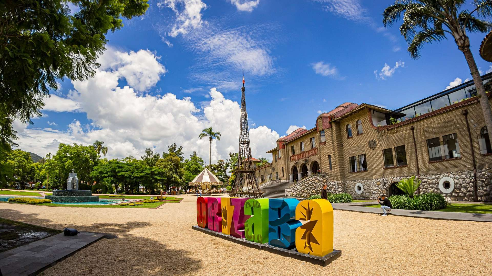
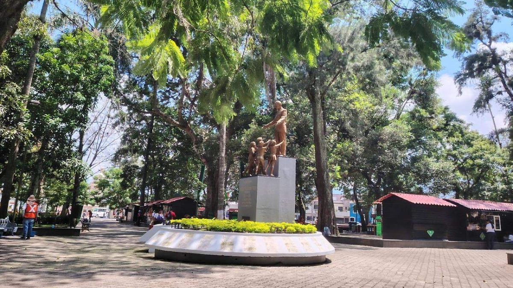
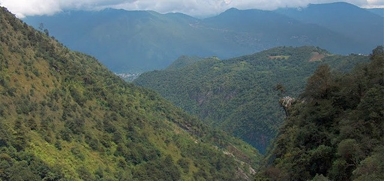

Lugares Turísticos de Orizaba
| Nombre | Horario | Precio | Dirección | Datos Extra |
|---|---|---|---|---|
Teleférico de Orizaba
|
9:00 AM - 8:00 PM | $50 MXN | Calle Sur 4, Centro, Orizaba | Ofrece vistas espectaculares de la ciudad |
Ecoparque del Río
|
Abierto 24 horas | Gratis | Avenida Cri-Cri, Orizaba | Ideal para caminatas y actividades al aire libre |
Palacio de Hierro
|
10:00 AM - 6:00 PM | Gratis | Calle Madero, Centro, Orizaba | Obra arquitectónica diseñada por Gustave Eiffel |
Poliforum Mier y Pesado  |
9:00 AM - 7:00 PM | Gratis | Avenida Oriente 6, Centro, Orizaba | Edificio histórico con jardines impresionantes y museo. |
Alameda Francisco Gabilondo Soler  |
Abierto 24 horas | Gratis | Calle Poniente 3, Centro, Orizaba | Ideal para caminatas y actividades al aire libre. |
Cañón de la Carbonera  |
7:00 AM - 5:00 PM | $20 MXN | Camino Viejo a San José, Orizaba | Ideal para senderismo y contacto con la naturaleza. |